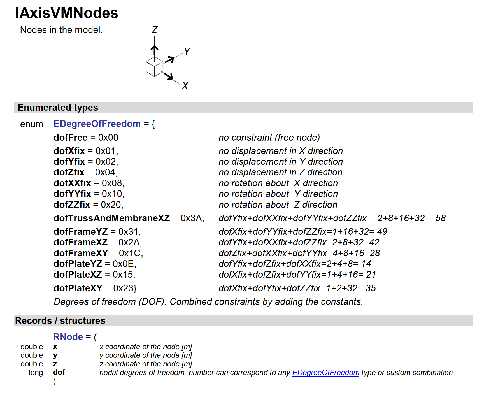
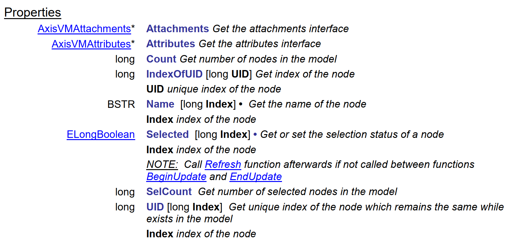

Getting Started¶
Installation and testing¶
Register AxisVM’s Type Library¶
If this is not your first time using AxisVM through a COM interface on your machine, you should already have a registered type library and you can skip this step. Otherwise, follow the instructions at the beginning of the AxisVM API Reference Guide.
Install PyAxisVM¶
This is optional, but we suggest you to create a dedicated virtual enviroment at all times to avoid conflicts with your other projects. Create a folder, open a command shell in that folder and use the following command
>>> python -m venv venv_name
Once the enviroment is created, activate it via typing
>>> .\venv_name\Scripts\activate
The AxisVM python package can be installed (either in a virtual enviroment or globally) from PyPI using pip on Python >= 3.6:
>>> pip install axisvm
Launch AxisVM from Python¶
The axisvm.com.client submodule implements various tools to handle the client side operations of creating a COM connection. Import the module and start a new application instance with the start_AxisVM method:
from axisvm.com.client import start_AxisVM
axapp = start_AxisVM(visible=True)
To test the connection, you can query the path of the executable being run by typing axapp.FullExePath.
How to use the API¶
pyaxisvm has two layers. The first one is the raw type library extracted from AxisVM using the comptypes package. We are working on an online version of it, until that the documentation of this layer is only available in pdf format, that you should already posess at the moment of reading this notebook. If you don’t have it yet, go to our website, and look for it under downloads. Be careful to download the documentation that matches the version of your AxisVM instance.
Basic API usage¶
Firts of all, we need a runnning AxisVM either in the background, or with the graphical interface.
from axisvm.com.client import start_AxisVM
axvm = start_AxisVM(visible=True, daemon=True)
As a consequence of the hierarchical structure of the models in AxisVM, every model creation proccess starts with nodes. To create nodes we need an interface to the nodes of the application. This is achieved by the IAxisVMNodes class of the type library. If you look it up in the pdf document, you will see this:

Just like other interfaces, the documentation of IAxisVMNodes begins with listing the enumerations and records specific to nodes. Below these, you can see the functions of the interface.

After all the functions, the documentation of the interface is finished by listing the properties of the interface.

from axisvm.com.client import start_AxisVM
axvm = start_AxisVM(visible=True, daemon=True)
modelId = axvm.Models.New()
model = axvm.Models[modelId]
Right below the Add function, there is the AddWithDOF, with the following documentation:

It tells, that the function needs to be called with specifying three scalar values and a fourth one specifying a DOF component. The enumeration EDegreeOfFreedom was listed at the beginning of the documentation of the interface.
from axisvm.com.tlb import dofFree
id1 = model.Nodes.AddWithDOF(-1, -1, 0, dofFree)
id2 = model.Nodes.AddWithDOF(1, -1, 0, dofFree)
id3 = model.Nodes.AddWithDOF(1, 1, 0, dofFree)
id4 = model.Nodes.AddWithDOF(-1, 1, 0, dofFree)
After the session has ended, close the application by
axvm.Quit()